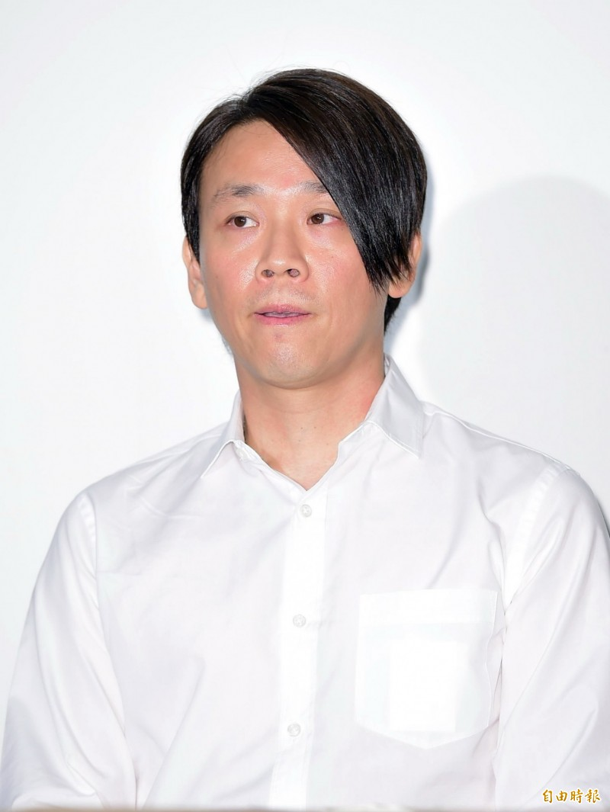

陶喆生于香港,父亲陶大伟是台湾歌手,母亲王复蓉是京剧演员,2005年的《Catherine》一曲即是写关于他们的母子关系。外祖父王振祖亦京剧出身,为台湾复兴剧校创办人。祖父陶一珊是前台湾省政府警务处处长。堂姐陶君薇是MTV台湾频道VJ。 陶喆自言从小听披头四乐队、皇后乐队、齐柏林飞船、罗大佑等等音乐人作为启蒙，因此创作的音乐常带有强烈批判色彩。 就学 陶喆曾于台北公馆伯大尼美国学校就读,15岁到美国,定居加州,曾就读加利福尼亚大学尔湾分校和加州大学洛杉矶分校,主修心理学和电影。17岁时和同学在学校组了团名为“Instant Pictures”的乐团。